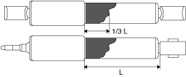
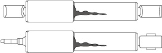
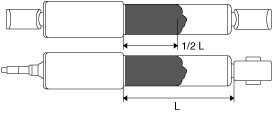

REAR SHOCK ABSORBER INSPECTION [REAR BRAKE (DRUM)]
id0214c9128900
1. Remove the rear shock absorber. (See REAR SHOCK ABSORBER REMOVAL/INSTALLATION [REAR BRAKE (DRUM)].)
2. Inspect the rear shock absorber for damage or oil leakage.
3. Compress and extend the rear shock absorber piston rod at least three times at a steady rate. From the fourth compression stroke, verify that the operational force does not change and that there is no unusual noise.
4. Remove the wheel and tire.
5. Remove the rear shock absorber. (See REAR SHOCK ABSORBER REMOVAL/INSTALLATION [REAR BRAKE (DRUM)].)
6. Inspect the rear shock absorber for damage.
7. Inspect the rear shock absorber for oil leakage and if there is any malfunction, replace the rear shock absorber. (See REAR SHOCK ABSORBER REMOVAL/INSTALLATION [REAR BRAKE (DRUM)].)
|
SYMPTOM |
DETAIL |
ACTION |
|---|---|---|
 |
OIL STAIN BELOW DUST BOOT
• Oil stain is below the dust boot as shown in the figure.
• The oil stain area is 1/3 of L or less.
|
Wipe off any dust or oil on the surface.
|
 |
OIL LEAKAGE RUNS DOWN IN STRIP
• Oil is running down in a strip along the side of the rear shock absorber as shown in the figure.
|
Replace the rear shock absorber. (See REAR SHOCK ABSORBER REMOVAL/INSTALLATION [REAR BRAKE (DRUM)].)
|
 |
OIL LEAKAGE BELOW DUST BOOT
• The oil leakage area is 1/2 of L or more as shown in the figure.
|
8. Expand and contract the rear shock absorber piston rod 3 times or more at a certain speed and after the 4th time verify that the weight in a full stroke is constant with no abnormal response and noise.